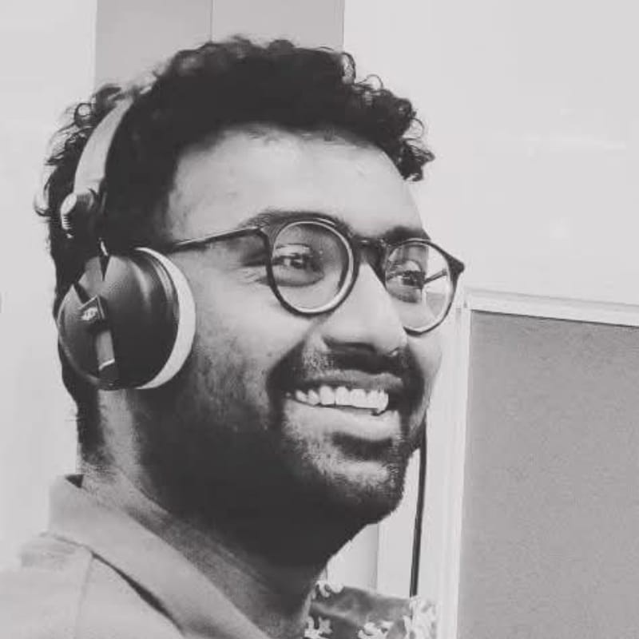

ANIL
REDDY

Writer / Director
Producer / Editor
Producer / Editor
Telugu cinema / Streaming
Hyderabad, India
Hyderabad, India
Scroll to discover ↓
A career built across filmmaking
Cinema has been the centre of my working life. I understand a story as creative intent, production reality and audience experience — at the same time.
I have worked as a writer, editor, assistant director, actor, director and producer across features, streaming, advertising and commissioned films.
With Thulasivanam, those disciplines came together. I created, wrote and directed the series and am a credited Producer, with hands-on involvement across production, post and delivery to ETV Win.
That end-to-end experience lets me discuss a scene, budget implication, schedule problem, cut, pitch or target audience with the same practical lens.
01Story & DevelopmentConcept · screenplay · dialogue · structure
02Direction & PerformanceCasting · staging · visual grammar
03ProductionExecution · coordination · cost awareness
04Post & DeliveryEdit · sound · colour · final handover
05Content ThinkingEvaluation · packaging · audience fit
Featured work
Original Telugu series · ETV Win · 2024